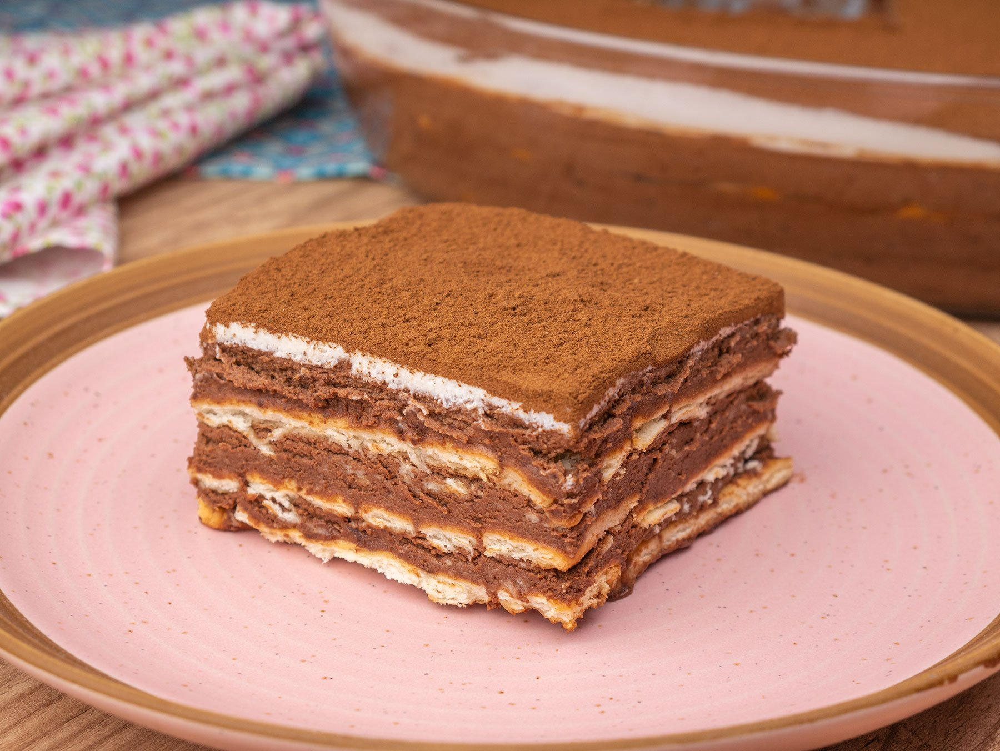

Pavê

The dish that actually preceded the Tiramisu!
This dessert recipe is very similar to the Tiramisu. However, it was invented before! It is really the OG of tray desserts. This recipe is very versatile, but we will be doing a chocolate pavê! We hope you'll enjoy it as much as we do.
Ingredients
For this recipe, you'll need the following ingredients:
- Half a cup of cornstarch
- 2 cups of milk
- 1 can or box of condensed milk
- 1 teaspoon vannila extract
- 250g chopped chocolate
- 1 can or box of heavy cream
- 2 packages of sweet crackers of your preference
- A bit of milk to bathe the crackers in
- 200g chocolate sprinkles
Instructions
- First, dice all vegetables about half the size of a normal die.
- Put all diced vegetables in a bowl.
- Add olive oil and vinegar, adjusting to your taste.
- Add salt to taste.
- Mix the ingredients. You can alternatively just place them in a tupperware and shake it with the lid on.
- Add as a side dish to meat and/or white rice. Enjoy!